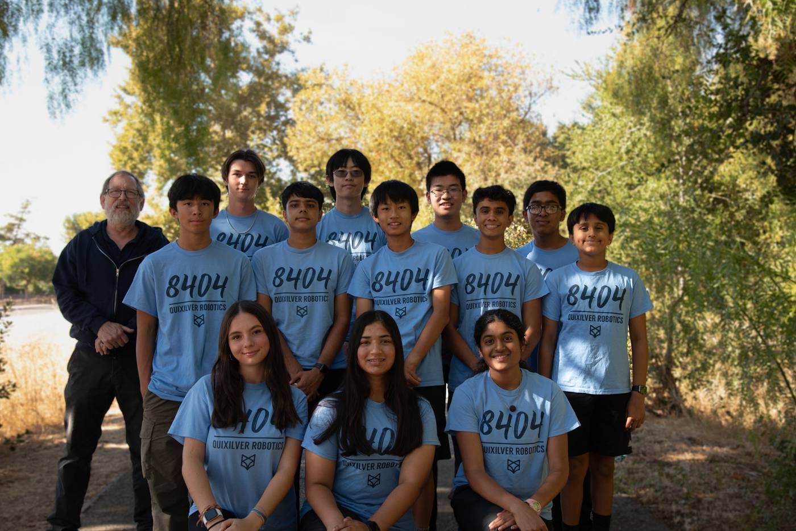

About Quixilver
FTC Team 8404 Quixilver Robotics, based in San Jose, CA, competes in the FIRST Tech Challenge with cutting-edge robots designed each season. Our passion for STEM drives us to innovate and excel.

Student-run, mentor-guided
We are a student-run team from Leland High School. We design, build, program, and document every robot ourselves — and mentor younger students along the way.
More than robots
We're more than a team — we're a community. By mentoring students, hosting STEM workshops, and engaging locally, we inspire the next generation of innovators.
This season: DECODE
Custom silicone wheels spinning at 2000 RPM pull artifacts in instantly, feeding a single-channel transition with pocketed color sorting — finished by a dual-motor 6000 RPM flywheel turret with April Tag + odometry goal locking.

A decade of awards
From 2014–2015 Think Award to 2025–2026 Control Award and NorCal Design — 12 seasons of judged and on-field honors, including a World Championship Control Award.